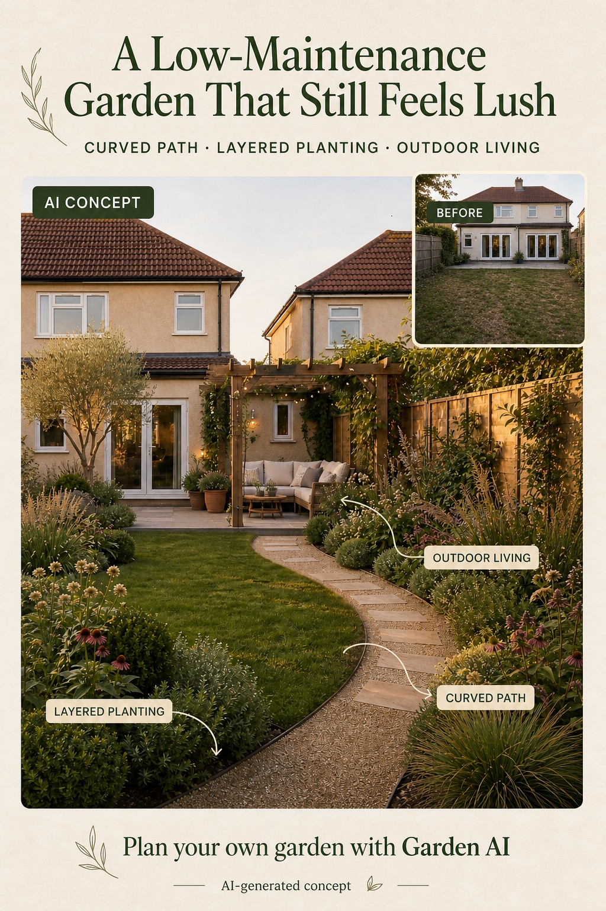

Repeat a small plant palette
Choose a few plants that suit your light and soil, then repeat them in groups. This can look calmer and is easier to understand than a long list of one-offs.
The goal is not a no-work garden. It is a garden with fewer awkward decisions: clear edges, repeatable plant groups, and a layout that makes time outside easy to enjoy.
Editorially reviewed July 16, 2026.
The image below is an AI-generated concept for exploring direction—not a planting or construction plan.

Choose a few plants that suit your light and soil, then repeat them in groups. This can look calmer and is easier to understand than a long list of one-offs.
Defined routes help a garden feel finished. They can also make routine access, trimming, and watering more straightforward.
A simple place to sit that is easy to reach gets used more often than a perfect-looking corner at the far end of the yard.
“Easy care” means different things in a dry, wet, shaded, windy, or frost-prone garden. Use this direction as a visual brief, then choose species and irrigation with local guidance. A landscaper or nursery can help confirm suitability.
Use local guidance for light, soil, rainfall, frost, heat, wind, mature size, and invasive-species restrictions.
Make sure every bed, edge, tap, drain, and storage area can be reached without stepping over fragile plants.
Repeat a short plant and material palette so replacement, pruning, watering, and seasonal care are easier to understand.
Picture the mature spread of plants and the weathering of surfaces, not only how the garden looks on installation day.
No. Gravel can be useful in the right place, but it is one of many options. Plant selection, spacing, mulch, path access, and irrigation all affect the amount of care a garden needs.
Yes. Focus on reversible choices first: containers, a defined seating area, small groups of plants, and better lighting. Confirm any property restrictions before making permanent changes.
There is no universal list. The easiest plants are those suited to your local light, soil, water, temperature range, and available space. A local nursery or qualified landscape professional can help narrow the options.
Upload a photo to explore directions before the next decision.
AI-generated visualizations are concepts. Check local conditions and consult a qualified professional before construction or planting.